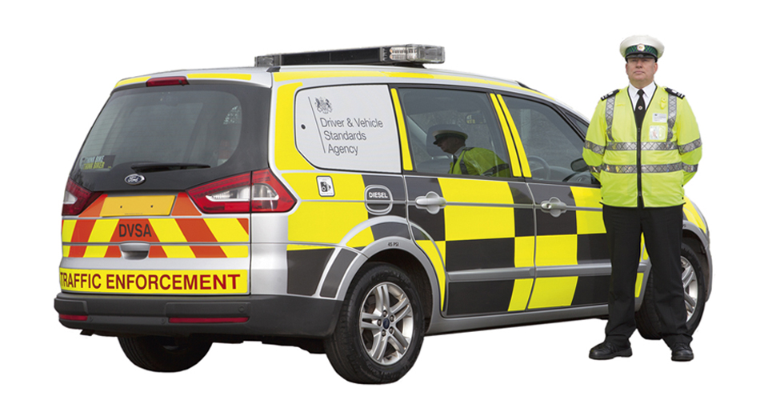
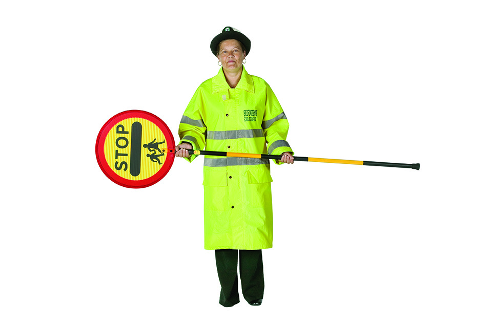

3. Signals by authorised persons
授權⼈員發出的訊號
Signals used by authorised persons, including police officers, arm signals to persons controlling traffic, Driver and Vehicle Standards Agency officers and traffic officers and school crossing patrols.
授權⼈員使⽤的信號，包括警察、交通控制⼈員、駕駛員和⾞輛標準局官員、交通官員和學校過路巡邏⼈員的⼿臂信號。
I. POLICE OFFICERS 警務人員
Stop 停⽌
Traffic approaching from the front
從前⽅駛來的⾞輛

Traffic approaching from both front and behind
從前⽅和後⽅駛來的⾞輛

Traffic approaching from behind
⾞輛從後⽅駛來
To beckon traffic on 為了吸引交通

From the side 從側⾯
From the front 從前⾯

From behind* 從後⾯*
*In Wales, bilingual signs appear on emergency services vehicles and clothing
*在威爾⼠，緊急服務⾞輛和服裝上出現雙語標誌
II. ARM SIGNALS TO PERSONS CONTROLLING TRAFFIC
向控制交通的人員發出手臂訊號

I want to go straight on 我想直接⾛

I want to turn left; use either hand
我想左轉；使⽤任⼀隻⼿
I want to turn right 我想右轉
III. DRIVER AND VEHICLE STANDARDS AGENCY OFFICERS AND TRAFFIC OFFICERS
司機及車輛標準局官員和交通管理員

Traffic officer 交通管理員

DVSA officer DVSA 官員
These officers now have new powers to stop/direct vehicles and will be using hand signals and light signals similar to those used by police. You MUST obey any signals given (see Rules 107 and 108)
這些警官現在擁有攔截/指揮⾞輛的新權⼒，並將使⽤與警察類似的⼿勢和燈光訊號。您必須遵守給出的任何信號 (請參閱規則 107 和 108)。
IV. SCHOOL CROSSING PATROLS
學校過路巡邏人員
Not ready to cross pedestrians
沒有準備好穿越⾏⼈

Barrier to stop pedestrians crossing
阻⽌⾏⼈過⾺路的欄桿

Ready to cross pedestrians, vehicles must be prepared to stop
準備過⾺路，⾞輛必須準備停⾞

All vehicles must stop
所有⾞輛必須停⾞